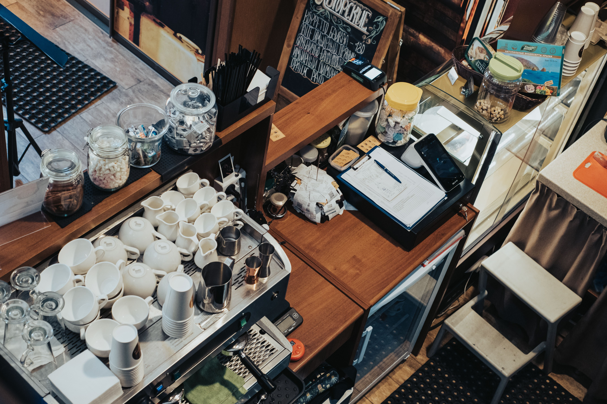

Bienvenidos
La Cafetería La Barquita es un rincón acogedor situado en el corazón de Sanlúcar de Barrameda, a pocos pasos del río Guadalquivir y del emblemático Bajo de Guía. Desde hace más de veinte años, ofrecemos a vecinos y visitantes un espacio donde disfrutar del mejor café tostado artesanalmente, repostería casera y desayunos preparados con productos locales de primera calidad.
Nuestro local combina el encanto de la tradición sanluqueña con un ambiente moderno y familiar. Las paredes decoradas con fotografías antiguas de la ciudad, la música suave de fondo y el aroma del café recién hecho hacen de cada visita una experiencia única. Te invitamos a descubrir por qué somos el lugar favorito para empezar el día o disfrutar de una tarde tranquila.
Nuestros servicios
- Café de especialidad tostado artesanalmente
- Repostería casera elaborada cada mañana
- Desayunos y meriendas con productos locales
- Terraza exterior con vistas al casco histórico
- Conexión Wi-Fi gratuita para nuestros clientes
Productos destacados

Café con leche

Tarta de la abuela

Tostada sanluqueña